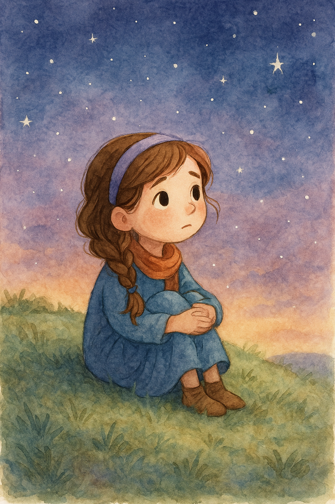

-
Shadows in the Wake

Author Roxanne Parrish
A short story about the artist.
A day in the old life.
-
Daughter
From Mark 5:24-34
This is the story of the daughter of Miriam and Azriel, sister of Yael, dancer of fig grives and firelight.
Set against the vibrant and tumultuous backdrop of 1st-century Judea, Daughter tells the powerful first-person story of a woman who suffered for twelve long years with a relentless illness.
Shunned and isolated, she lived in the shadows—until a single, daring act of faith led her to Jesus, the healer whose touch changed everything.
Through vivid encounters with Jesus, His disciples, and the unfolding events of His ministry, crucifixion, and resurrection,
this novel explores not only the miracle of physical healing but the profound inner transformation of a woman whose faith defied the impossible.
Blending historical detail with heartfelt spirituality, Daughter is a moving tribute to hope, resilience, and the enduring power of belief.
-
The Harvest

Roxanne Parrish
A glimpse of the apoclypse at armagedeon.
-
Love, Mom

Author: Roxanne Parrish
Love, Mom is a biography of the artist's mother.
Told in brutal detail and laced with dry humor.
Love, Mom is a matriarchal horror about generational trauma, truth-telling, and the sacred act of finally saying no.
It’s not about healing. It’s about surviving the inheritance.
-
Chrysalis

Author: Roxanne Parrish
On a terraforming outpost on Europa, a scientist studying microbial life discovers a strange organic pod buried beneath the ice.
The organism inside appears to be evolving at an accelerated rate, learning from its environment—and from her.
Crew members begin changing—mentally first, then physically. Paranoia grows as no one knows who’s been infected…
or why they’re evolving.
-
The Ninth Flame

Author: A.J. Brightman
The Ninth Flame is a fantasy novel that follows the journey of a cat pride...
-
Clockwork Heart

Author: A.J. Brightman
A brilliant clockmaker discovers that a celebrated inventor has been replaced by a lifelike automaton bearing the clockmaker’s own secret designs.
Plunged into a hidden conspiracy, the clockmaker teams up with a resourceful street thief and a repentant insider to unravel the workings
of a clandestine society bent on substituting humanity with perfected machines. Racing against the Horologium’s midnight chime,
they infiltrate subterranean forges, outwit sentient sentinels, and face a towering “Perfection Automaton” fused with a loved mentor’s mind.
In a final duel atop the giant clockface, they must choose between shattering the mechanism that would enslave the city or seizing control of its
fate—proving that true life cannot be dictated by gears alone.
Children's Book Collection
Explore a curated collection of books that delve into the life and works of the artist's children.
-
Time to Shine

Luma

Author: Gwendolyn Nicholson
Time to Shine is a children's book about overcoming self-doubt and finding the courage to shine.